Ford eksplorer ST Performance z 3.0 podwójnie doładowany silnik Benzynowy o mocy 400km i 10 stopniową skrzynią biegów daje dużą przyjemność podróżowania tym wozem. Pełne wyposażenie topowej wersji ST. Auto bez żadnych wad gotowe do jazdy bez wkładu finansowego. Pełny serwis olejowy,skrzyni biegów,dyferencjału,silnika i wszystkich płynów chamulcowy,chłodniczy.Pełny serwis klimatyzacji. Na pojazd jest nałożona powłoka ceramiczna w celu zabezpieczenia lakieru.
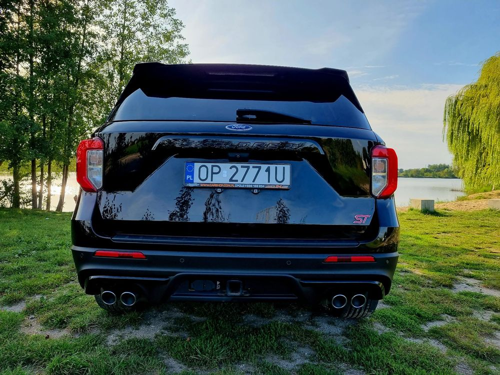 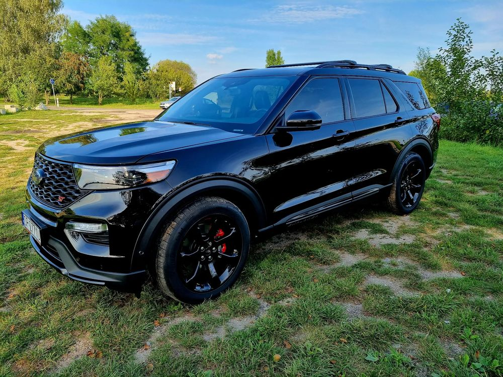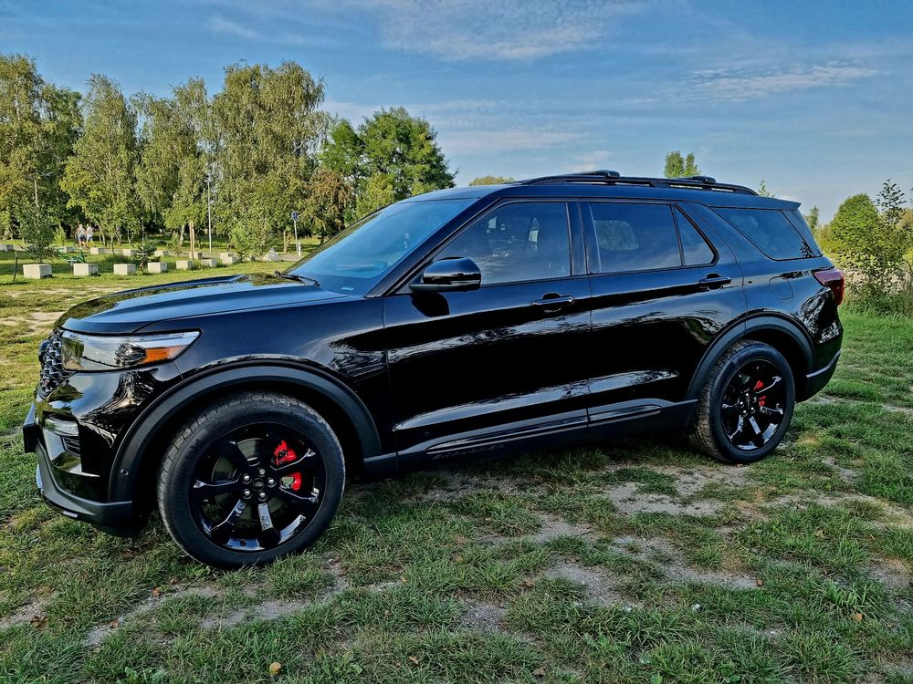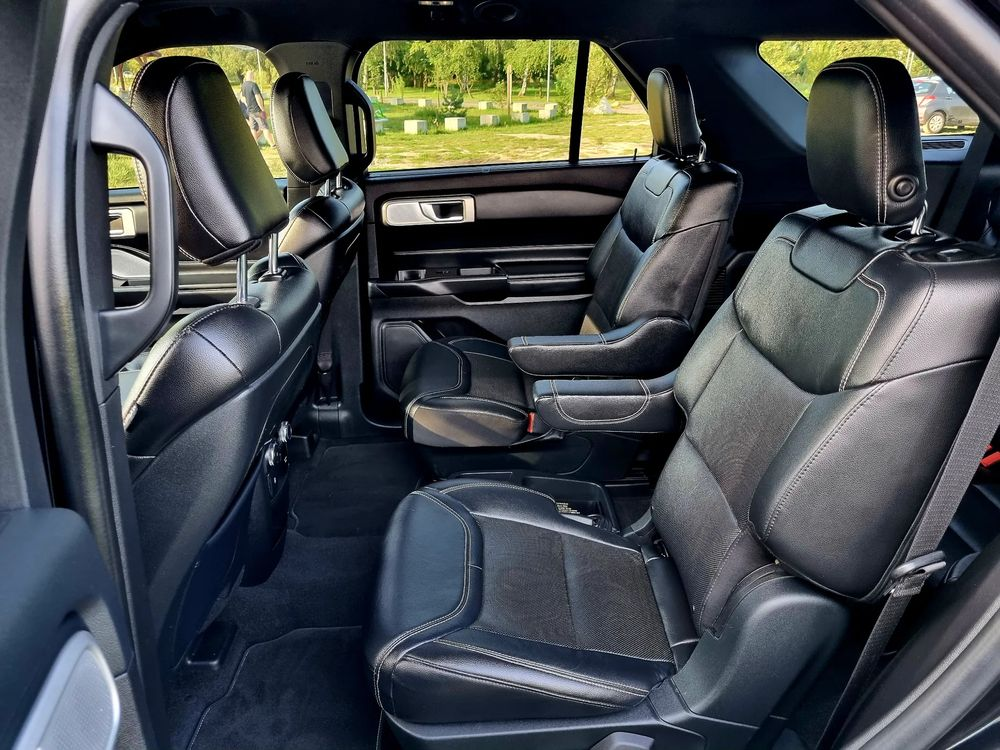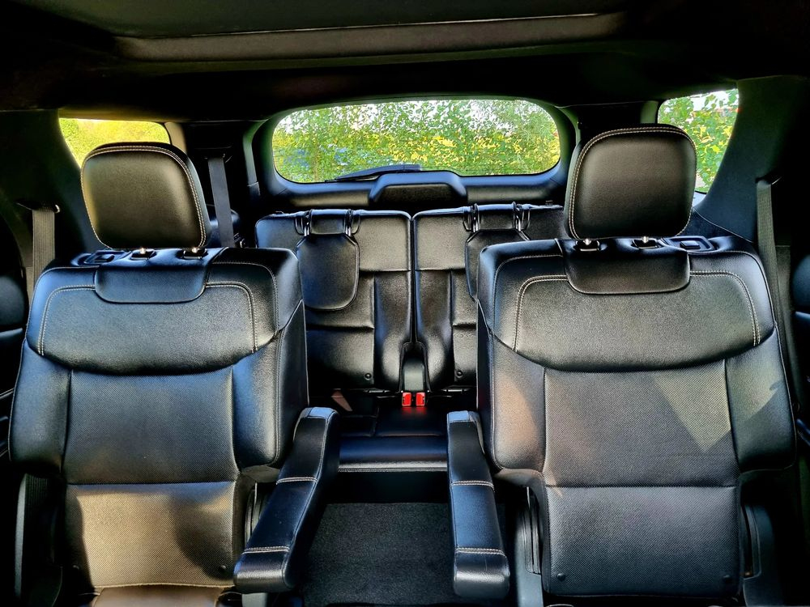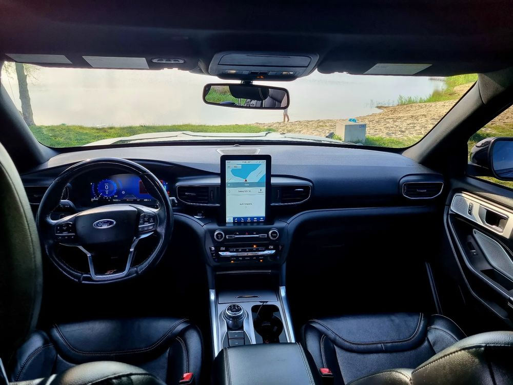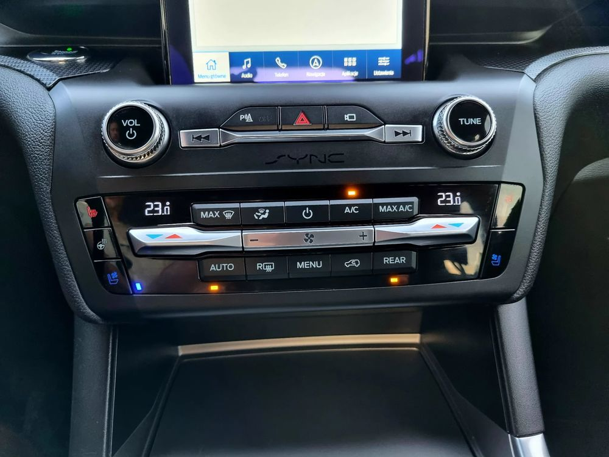
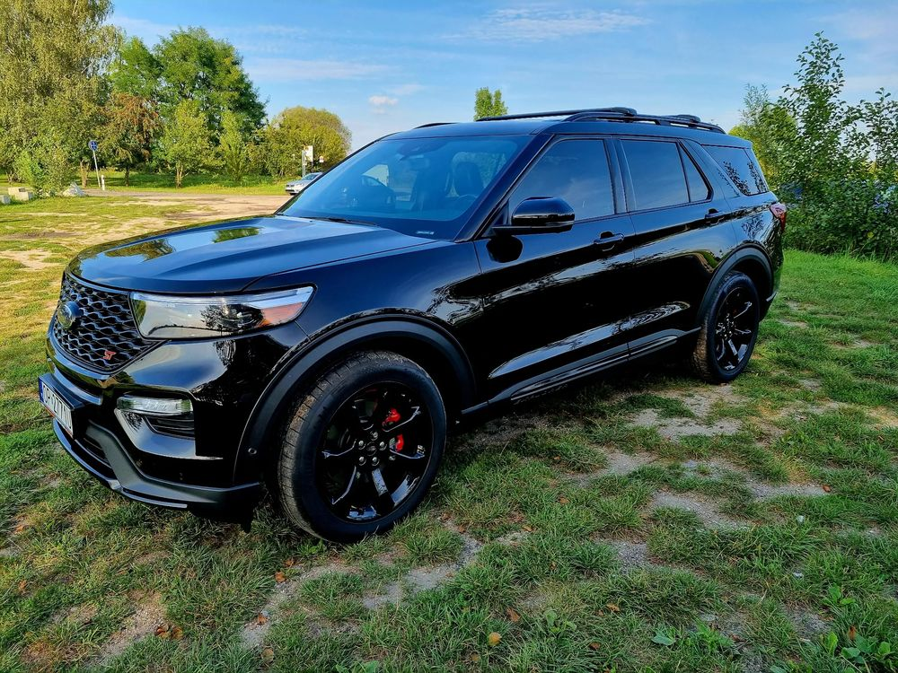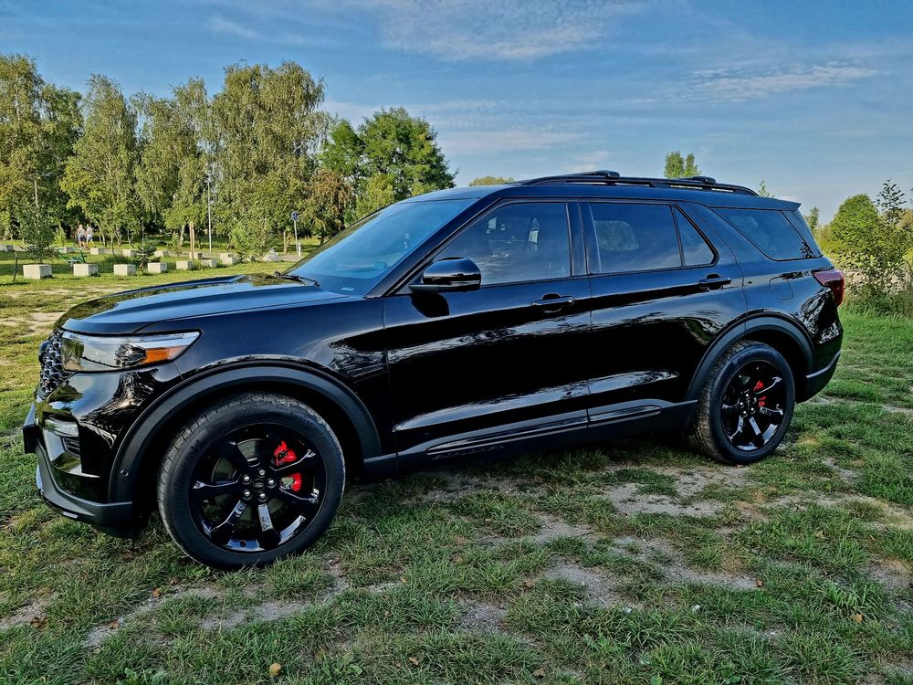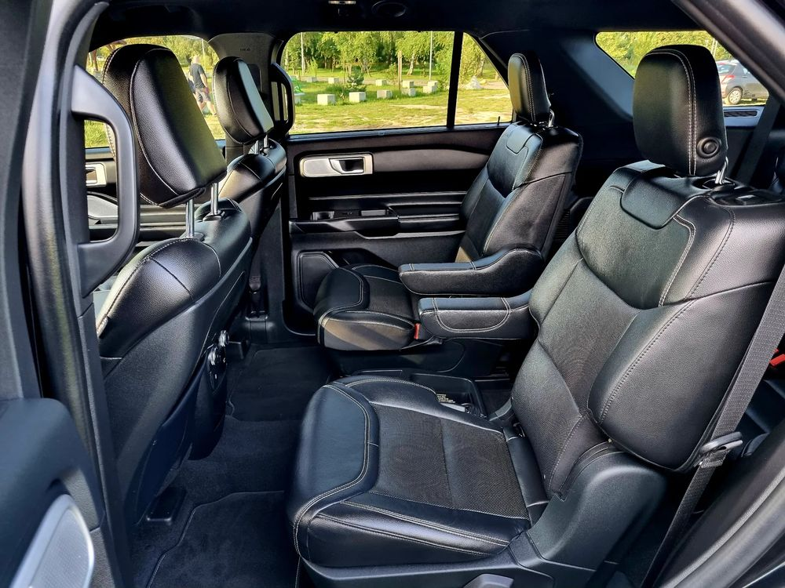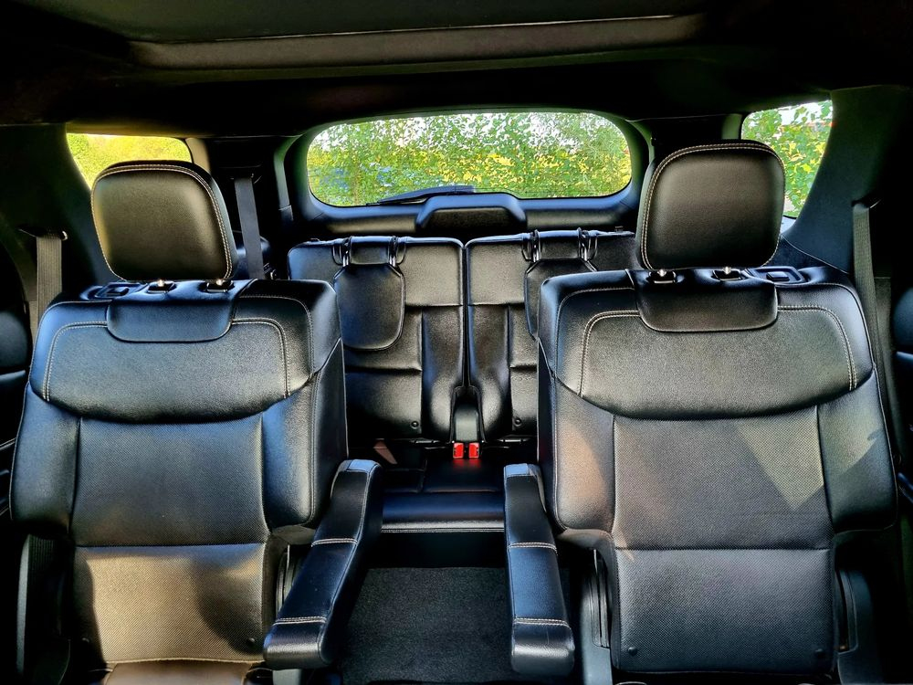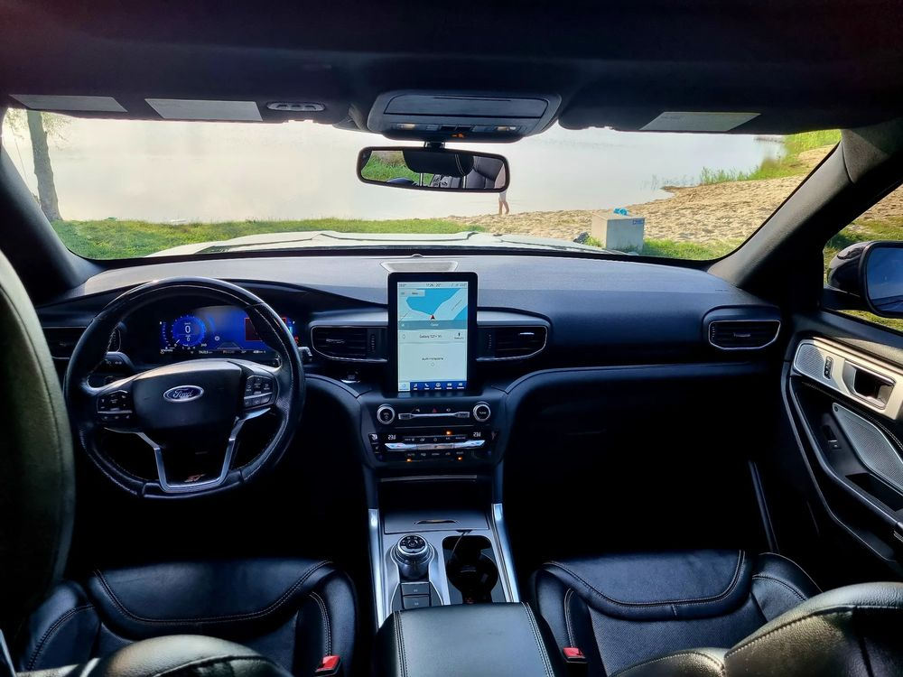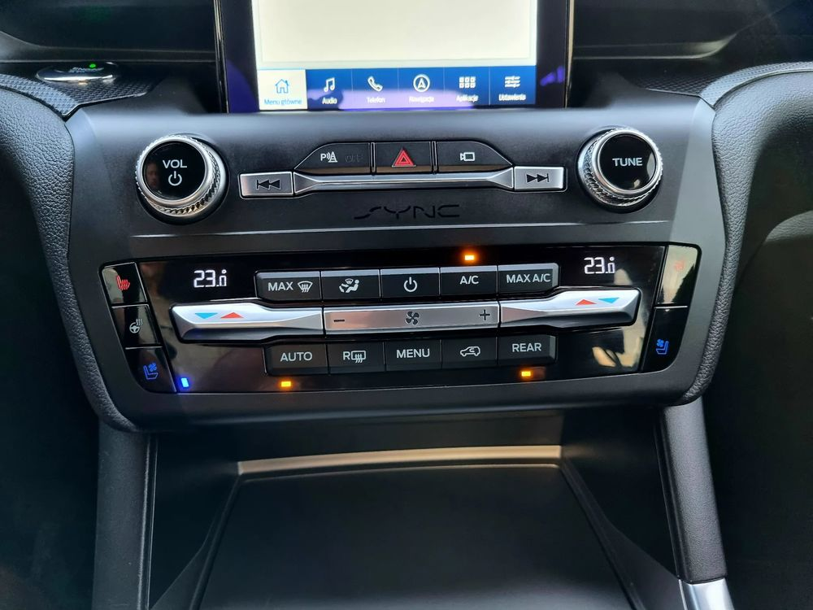